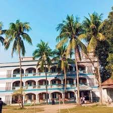
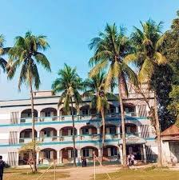

Dhunat Govt N. U. Pilot Model high school::
.jpg) 

About the school:
This is the current trend. Yu, the pilot model has been established as the current location of the high power indohani event 12. Girish Chandra, a resident of Dhunat Prana Para, appeared to be a pioneer in establishing computer-based electricity. Incredibly duplicate personal levels of bizarre personal assistant Dhunat Sadar Sanctuary do the double in the partition of literature on Babu Yudhisthira's headquarters. Ideally Model Free Primary,Dhunat Dak Bangla Mr. Rajeev Stimulation, L, A-Bogra, on January 7, passed the M-Middle (Hilshe), received the Imam's electricity called H-E Corner, which Dhunat has long-hailed. Seminar Sebi and Danbir Matikawara resident Na Umuddin Talukder (NUU) 20 ThreeHe assisted in the construction of the school's physical infrastructure by donating 20 percent of the acre and 20 / cash. Earlier, the school was granted higher education by the University of Calcutta in 1/3/1. Other donors and locally respected persons for the name of Dhunat Naeem Uddin High English name are: Babu Naresh Chandra Sarkar, 2 Jagadish Chandra Sarkar. Tamiz Uddin Sarkar etc. .